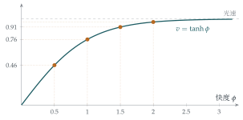

STEP III 2019，第 2 题
继续之前，请先阅读题目（原题为英文）。题目载于 OCR 提供下载的 2019 年 STEP 试卷（zip 文件）内的 STEP III 试卷： www.ocr.org.uk/Images/696590-2019-past-papers.zip
引子
你怎样知道 \(e^x\) 是甚么？在学校里，它是通过复利息引入的，或者说成是导数（derivative）等于自身的函数，又或者写成 \(\lim (1 + x/n)^n\)。这道题给出另一个答案：\(e^{kx}\) 是唯一能把加法变成乘法的可微（differentiable）函数，即 \(\mathrm{f}(x + y) = \mathrm{f}(x)\mathrm{f}(y)\)。单凭这条规则，再加上一个数 \(\mathrm{f}'(0)\)，就足以把这个函数完全确定下来。
第二部分对一条较陌生的规则做同样的事：\(\mathrm{g}(x + y) = \frac{\mathrm{g}(x) + \mathrm{g}(y)}{1 + \mathrm{g}(x)\mathrm{g}(y)}\)。如果你觉得这条公式似曾相识，那就对了：它正是狭义相对论（special relativity）中爱因斯坦（Einstein）的速度相加法则，只是把光速设为 \(1\)。这条规则迫使函数必然是 \(\tanh\)，而这正好解释了为何任何物体都不能被加速至超越光速。
动笔之前
像 \(\mathrm{f}(x + y) = \mathrm{f}(x)\mathrm{f}(y)\) 这样以函数为未知量的方程，称为函数方程（functional equation）。
这条方程对所有 \(x\) 和 \(y\) 都成立。最值得首先尝试的是甚么？
特殊值。设 \(y = 0\)（或 \(x = y\)，或 \(y = -x\)），往往不费甚么工夫就能得到大量资料。两个部分都是这样起步的。
逐步解题
阶段 1 在零处的值
代入 \(x = y = 0\)：\(\mathrm{f}(0) = \mathrm{f}(0)^2\)，所以 \(\mathrm{f}(0) = 0\) 或 \(1\)。
如果 \(\mathrm{f}(0) = 0\)，会出甚么问题？
若 \(\mathrm{f}(0) = 0\)，则代入 \(y = 0\) 可得对每个 \(x\) 都有 \(\mathrm{f}(x) = \mathrm{f}(x)\mathrm{f}(0) = 0\)。于是 \(\mathrm{f}\) 恒等于零，且 \(\mathrm{f}'(0) = 0\)，与 \(\mathrm{f}'(0) = k \neq 0\) 矛盾。所以 \(\mathrm{f}(0) = 1\)。■
阶段 2 由零处的导数得出处处的导数
在 \((*)\) 中，写成 \(\mathrm{f}(x + h) = \mathrm{f}(x)\mathrm{f}(h)\)。有甚么可以抽到极限之外？
\[\begin{aligned} \mathrm{f}'(x) &= \lim_{h \to 0} \frac{\mathrm{f}(x)\mathrm{f}(h) - \mathrm{f}(x)}{h} = \mathrm{f}(x)\lim_{h \to 0}\frac{\mathrm{f}(h) - 1}{h} \\ &= \mathrm{f}(x)\lim_{h \to 0}\frac{\mathrm{f}(0 + h) - \mathrm{f}(0)}{h} = \mathrm{f}(x)\,\mathrm{f}'(0) = k\,\mathrm{f}(x). \qed \end{aligned}\] 函数方程让我们把 \(0\) 附近的性态搬到其他每一点去。
阶段 3 求解 \(\mathrm{f}' = k\mathrm{f}\)
考虑 \(\mathrm{u}(x) = \mathrm{f}(x)e^{-kx}\)。则 \(\mathrm{u}'(x) = \bigl(\mathrm{f}'(x) - k\mathrm{f}(x)\bigr)e^{-kx} = 0\)，所以 \(\mathrm{u}\) 是常数，而 \(\mathrm{u}(0) = \mathrm{f}(0) = 1\)。因此 \[\mathrm{f}(x) = e^{kx}. \qed\] （分离变量（separating the variables），\(\int \frac{\mathrm{d}\mathrm{f}}{\mathrm{f}} = \int k\,\mathrm{d}x\)，会得到相同的答案，但需要 \(\mathrm{f}(x) \neq 0\)；用 \(\mathrm{u}\) 这个技巧就免却了这重顾虑。）
阶段 4 第二条规则
在 \(\mathrm{g}\) 的规则中代入 \(y = 0\)。这告诉你 \(\mathrm{g}(0)\) 是甚么？\(|\mathrm{g}(x)| < 1\) 在哪里派上用场？
取 \(y = 0\)：\(\mathrm{g}(x)\bigl(1 + \mathrm{g}(x)\mathrm{g}(0)\bigr) = \mathrm{g}(x) + \mathrm{g}(0)\)，化简后得 \(\mathrm{g}(0)\bigl(\mathrm{g}(x)^2 - 1\bigr) = 0\)。由于 \(|\mathrm{g}(x)| < 1\)，括号内的式子永不为零，所以 \(\mathrm{g}(0) = 0\)。
现在利用这条规则计算 \(\mathrm{g}(x + h) - \mathrm{g}(x)\)，化简，除以 \(h\)，再令 \(h \to 0\)。
\[\mathrm{g}(x + h) - \mathrm{g}(x) = \frac{\mathrm{g}(x) + \mathrm{g}(h) - \mathrm{g}(x) - \mathrm{g}(x)^2\mathrm{g}(h)}{1 + \mathrm{g}(x)\mathrm{g}(h)} = \frac{\mathrm{g}(h)\bigl(1 - \mathrm{g}(x)^2\bigr)}{1 + \mathrm{g}(x)\mathrm{g}(h)}.\] 除以 \(h\)。当 \(h \to 0\) 时，\(\frac{\mathrm{g}(h)}{h} = \frac{\mathrm{g}(h) - \mathrm{g}(0)}{h} \to \mathrm{g}'(0) = k\)，而 \(\mathrm{g}(h) \to \mathrm{g}(0) = 0\)（可微函数必定连续（continuous）），所以分母趋向 \(1\)。因此 \[\mathrm{g}'(x) = k\bigl(1 - \mathrm{g}(x)^2\bigr). \qed\]
阶段 5 求解
分离变量。当 \(|g| < 1\) 时，哪个函数的导数是 \(\frac{1}{1 - g^2}\)？
由于 \(|\mathrm{g}| < 1\)，我们可以相除：\(\dfrac{\mathrm{g}'}{1 - \mathrm{g}^2} = k\)。函数 \(\operatorname{artanh} g = \frac12\ln\frac{1 + g}{1 - g}\) 的导数是 \(\frac{1}{1 - g^2}\)，所以 \(\frac{\mathrm{d}}{\mathrm{d}x}\operatorname{artanh}\mathrm{g}(x) = k\)，而 \(\operatorname{artanh}\mathrm{g}(x) = kx + C\)。由 \(\mathrm{g}(0) = 0\) 得 \(C = 0\)，所以 \[\mathrm{g}(x) = \tanh kx. \qed\] 验算：加法公式 \(\tanh(A + B) = \dfrac{\tanh A + \tanh B}{1 + \tanh A\tanh B}\) 正正就是题目给出的规则。
回顾
先试特殊值。代入 \(y = 0\) 便求得 \(\mathrm{f}(0)\) 和 \(\mathrm{g}(0)\)。
由一点到处处。加法定律（addition law）把 \(0\) 处的导数搬到每个 \(x\)，把函数方程化为微分方程（differential equation）。
唯一性（uniqueness）。这个论证不单是验证 \(e^{kx}\) 和 \(\tanh kx\) 符合要求，更证明了它们是仅有的可能。函数方程之所以能成为定义，原因正在于此。
背后的数学
在日常生活中，如果一列火车以速率 \(u\) 行驶，而你在车厢内以速率 \(v\) 向前走，你相对于地面的速率就是 \(u + v\)。爱因斯坦在 1905 年证明这只是一个近似。正确的法则（其中 \(c\) 为光速）是 \[u \oplus v = \frac{u + v}{1 + uv/c^2}.\] 若以 \(c\) 的分数来量度速率，这正是 \(\mathrm{g}\) 的规则。我们的结果说明，如果把每个速度写成 \(v = \tanh\phi\)，那么速度的合成就是把各个 \(\phi\) 相加。\(\phi = \operatorname{artanh} v\) 这个量称为快度（rapidity）。火箭引擎每次推进都会增加固定份量的快度，但由于对每个 \(\phi\) 都有 \(\tanh\phi < 1\)，速度只会愈来愈接近光速，却永远达不到（图 3.8.1）。把 \(0.9c\) 与 \(0.9c\) 合成，得到的不是 \(1.8c\)，而是 \(\frac{1.8}{1.81}c \approx 0.9945c\)。

柯西函数方程
最简单的函数方程是 \(\mathrm{f}(x + y) = \mathrm{f}(x) + \mathrm{f}(y)\)，柯西（Cauchy）在 1821 年研究过它。如果 \(\mathrm{f}\) 可微，用本题的方法可证明 \(\mathrm{f}(x) = kx\)。事实上只要连续就够了。但若完全不作任何正则性（regularity）假设，就会有其他极其怪异的解，它们的图像稠密地散布在整个平面上。Georg Hamel 在 1905 年构造出这些解；这个构造需要用到选择公理（axiom of choice），而且不可能把其中任何一个明确地写出来。这就是题目坚持 \(\mathrm{f}\) 可微的原因之一：这个假设并非例行公事。
同态
\(\mathrm{f}(x + y) = \mathrm{f}(x)\mathrm{f}(y)\) 的意思是，\(\mathrm{f}\) 把实数的加法变成正实数的乘法，并且保持两者的结构。用大学一年级代数的语言来说，\(\mathrm{f}\) 是由 \((\mathbb{R}, +)\) 到 \((\mathbb{R}_{>0}, \times)\) 的群同态（group homomorphism），而对数就是它的反函数。数学中许多最重要的函数，都是这样由它们所保持的结构来刻划的。在 第 7.6 节 中，我们会看到 \(\tanh\) 的几何意义：它量度的是“双曲角”（hyperbolic angle），而它的加法定律来自双曲旋转的复合。
思维技巧
不用公式，而是用函数所遵守的规则来描述它，并证明只有一个函数遵守这条规则。
数学家往往就是这样看待 \(\exp\)、\(\sin\)、\(\cos\) 和许多其他函数的：不把它们看成公式，而是看成函数方程或微分方程的唯一解。这解释了它们为何重要，而不只是怎样计算它们。
延伸练习
正切的规则。设 \(\mathrm{g}\) 可微，\(\mathrm{g}'(0) = k \neq 0\)，且只要等式两边都有定义，就有 \(\mathrm{g}(x + y) = \dfrac{\mathrm{g}(x) + \mathrm{g}(y)}{1 - \mathrm{g}(x)\mathrm{g}(y)}\)。证明 \(\mathrm{g}'(x) = k\bigl(1 + \mathrm{g}(x)^2\bigr)\)，并由此推出在 \(x = 0\) 附近 \(\mathrm{g}(x) = \tan kx\)。
柯西方程。若 \(\mathrm{f}\) 可微，且对所有 \(x\)、\(y\) 都有 \(\mathrm{f}(x + y) = \mathrm{f}(x) + \mathrm{f}(y)\)，证明 \(\mathrm{f}(x) = kx\)。
不用导数。 较难 只假设 \(\mathrm{f}(x + y) = \mathrm{f}(x)\mathrm{f}(y)\) 及 \(\mathrm{f}(1) = a > 0\)。证明对正整数 \(n\) 有 \(\mathrm{f}(n) = a^n\)，然后证明 \(\mathrm{f}(1/n) = a^{1/n}\)，再证明对每个正有理数 \(q\) 都有 \(\mathrm{f}(q) = a^q\)。（为甚么要再进一步就需要连续性？）
火箭科学。一枚火箭每次点火，都能相对于它当时所处的参考系把速率增加 \(0.5c\)。由静止开始，经过 \(2\)、\(3\) 和 \(4\) 次点火后，它（相对于起点）的速率是多少？请使用快度。
延伸阅读
Christopher Small, Functional Equations and How to Solve Them（Springer）。一本浅白易读的函数方程入门书，以喜欢解题的读者为对象。
Edwin Taylor & John Wheeler, Spacetime Physics（W. H. Freeman）。狭义相对论的经典入门书，全书都使用快度。
Tom Körner, Calculus for the Ambitious（Cambridge University Press）。由指数函数和三角函数的性质出发来定义它们，与本节的精神完全一致。